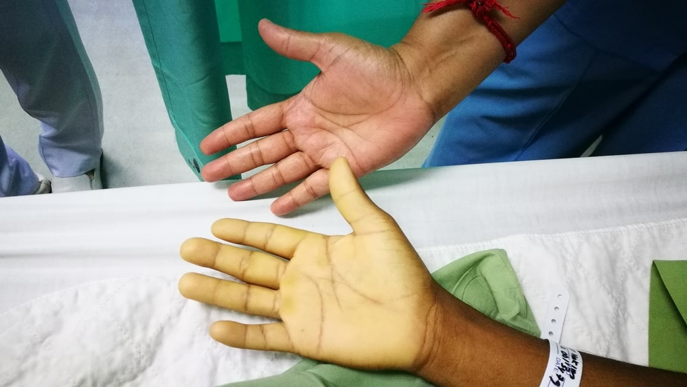

La anemia es una condición en la que la cantidad de glóbulos rojos saludables en la sangre es menor de lo normal, lo que lleva a una reducción en la capacidad de la sangre para transportar oxígeno a los tejidos del cuerpo.

Las causas de la anemia pueden variar, pero algunas comunes incluyen:
Los síntomas pueden variar según la severidad de la anemia y pueden incluir:
Para diagnosticar la anemia, los médicos suelen realizar:
El tratamiento de la anemia depende de la causa subyacente e incluye:
La mayoría de las personas con anemia pueden mejorar con el tratamiento adecuado. La respuesta al tratamiento puede variar según la causa de la anemia y la salud general del individuo. En general, con diagnóstico y tratamiento oportuno, la mayoría de las personas experimentan una recuperación significativa y la resolución de los síntomas.
| Categoría | Descripción | Consecuencias | Tratamiento |
|---|---|---|---|
| Definición | Trastorno alimentario caracterizado por episodios de atracones seguidos de purgas. | Daño al sistema digestivo, problemas cardíacos. | Terapia psicológica, medicación, cambios en la dieta. |
| Síntomas | Atracones recurrentes, miedo a aumentar de peso, comportamientos purgativos. | Deshidratación, desequilibrio electrolítico. | Asesoramiento psicológico, supervisión médica. |
| Causas | Factores genéticos, emocionales, culturales. | Desórdenes metabólicos, fatiga crónica. | Tratamiento multidisciplinario (psicólogos, médicos). |
| Prevención | Educación sobre alimentación saludable, apoyo emocional. | Deterioro físico y mental a largo plazo. | Intervención temprana, programas de apoyo. |